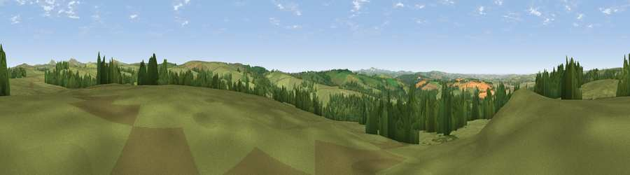

Viewpoint near Blisland
#7442 in England · top 18% of its area beats it · near BlislandWhere it is
The exact computed spot (SX 10650 73925). Click the marker for map links.
The view, rendered

A 360° render of this exact spot computed from the terrain model, tree cover and land cover — summer colours, afternoon light, calibrated against photographs of famous viewpoints. Real trees, hedges and buildings will differ in detail.
The panorama
Grey silhouette: terrain skyline in each direction (720 bearings, Earth curvature and refraction included). Dashed green: skyline with trees (+15 m) and buildings (+8 m) as obstacles. Blue strip: how far the ground is visible on each bearing.
Where the view opens
Wedge length = distance to the farthest visible ground on that bearing (vegetation-aware). Rings at 10, 25 and 50 km.
What fills the view
70% grassland · 22% woodland · 7% cropland ·
Angular shares of the visible panorama (visual magnitude), not map area. Landscape diversity 0.35 (0–1 Shannon).
Key numbers
More beautiful places nearby
The staircase of upgrades: each row has a higher view potential than everything closer. Driving times are estimates from straight-line distance, calibrated against real road routing — check an actual route before setting out.
| Place | Direction | Drive | Score |
|---|---|---|---|
| Viewpoint near Cardinham | SE · 5 km | ~11 min | 71.1 |
| Viewpoint near Michaelstow | NNW · 6 km | ~13 min | 72.5 |
| Rough Tor | NNE · 8 km | ~16 min | 76.5 |
| Brown Willy | NE · 8 km | ~16 min | 77.3 |
| Viewpoint near Port Isaac | NW · 10 km | ~20 min | 79.7 |
| Viewpoint near Boscastle | N · 15 km | ~28 min | 82.0 |
| Viewpoint near Boscastle | N · 16 km | ~28 min | 84.3 |
| Viewpoint near Boscastle | N · 16 km | ~28 min | 85.2 |
50.53438, -4.67328 · source: screening · position refined by local search. Computed location — check access rights before visiting.